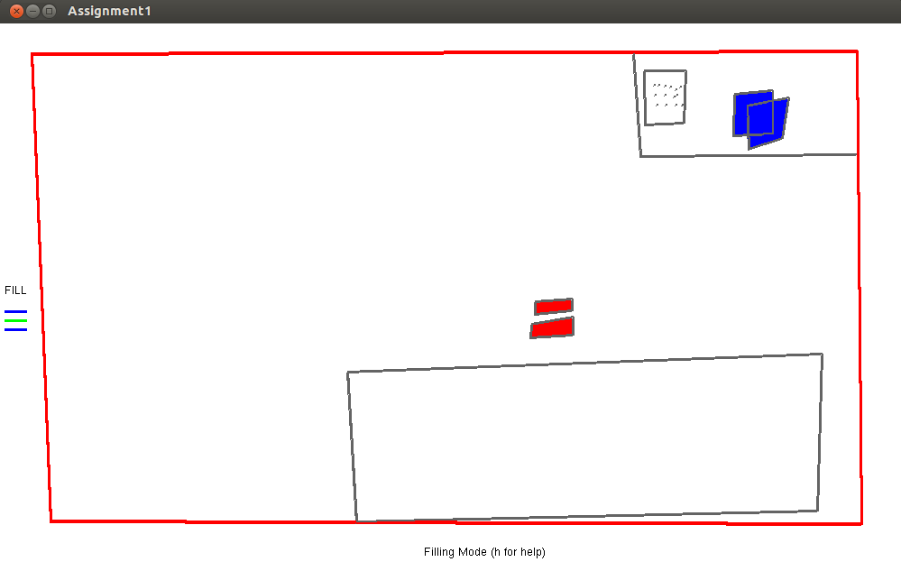

Important Note
This project is made as a submission for CS 475 - computer graphics course 2013, CSE IIT Bombay. Please avoid referring this if you are part of it.
Problem statement
Using ONLY glPoint method (openGL command to draw a point) in creating a drawing application. Sub problems include
- maintaining classes for all key functionality like pen, fill, point, line, polygon, drawing, canvas with a draw() function (using glPoint()) to draw the line/polygon to window.
- using GLUT to attach handlers for keyboard, Mouse, window reshaping and display
- Allowing user access to key drawing features
Concepts covered
Some of the concepts covered are :
- Rasterization - Bresenham line drawing
- Filling - Flood fill algorithm
Required
To run system requires openGL and GLUT (and C++). The project is tested on 32-bit Linux.
Compiling instructions and Examples
> g++ -lGL -lGLU -lglut -o canvas assignment1.cpp
use the above command to create the executable named canvas in the project folder (By default there's an executable. but just in case you edit any file).
> ./canvas
Use the above command to open the interface.
Input formats: the interface accepts input from keyboard (only specific keys) and mouse. press "h" while window is active to get the detailed list of keyboard input options. You can refer the same below
N - clear canvas.
D - clear drawing.
C - change colors and line width in pen and fill mode. Ex: > 200 100 100 4
S,L - save and load canvas. Ex : > input.txt.
F - change view mode.
1 - toggle draw lines mode
2 - toggle draw polygons mode
Important note: for commands like S, L, C where additional input is required (like file name or color attributes). The additional input must be given from terminal. (i.e type 'S' (say) on active canvas. shift to terminal and type filename there to save the canvas to that file. You can switch back to canvas once command is finished). If you are in pen mode, For C (to change pen attributes), the extra input in terminal requires R G B values followed by pen width. If you are in fill mode, the same command requires R G B R1 G1 B1 R2 G2 B2 (first three for general fill. next two for checker mode). The R G B are red blue green values of the color you desire to use (>0 <=255).
Use mouse to make points (general), draw polygons (polygon mode), lines (line mode) or fill color (fill mode).
Color of the canvas can be altered by changing the R, G , B values in config file before you start the canvas.
Below is a simple example drawing made using canvas. We included "hostel_room.txt" and "sachin.txt" file saved during this drawing. Load the same to get similar figure onto your canvas.

Contact | Authors and Contributors
This project is developed by myself Siddhartha (@siddug) and SachinR. You can contact me or visit my homepage at http://www.cse.iitb.ac.in/~siddu